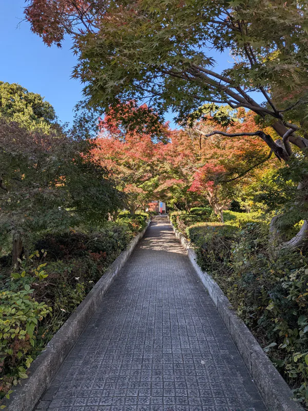
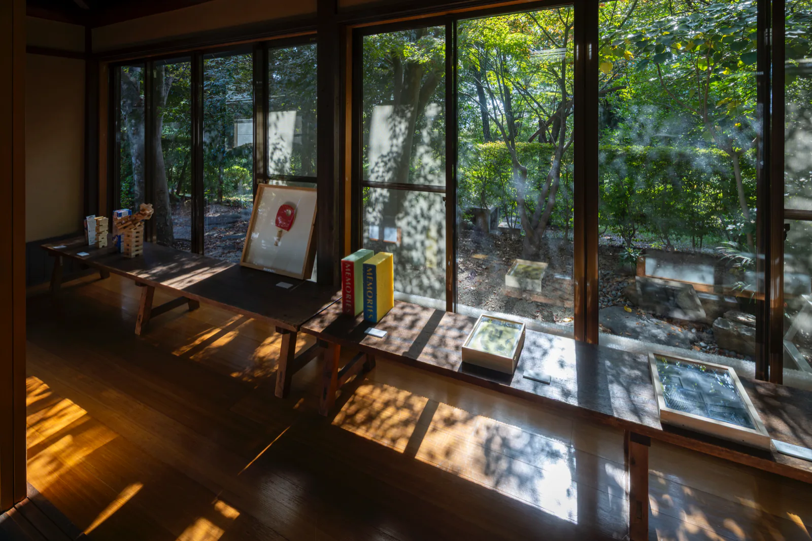
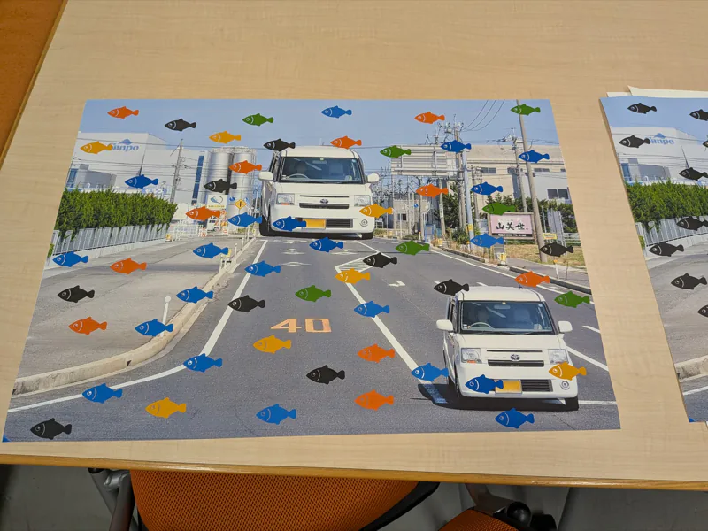
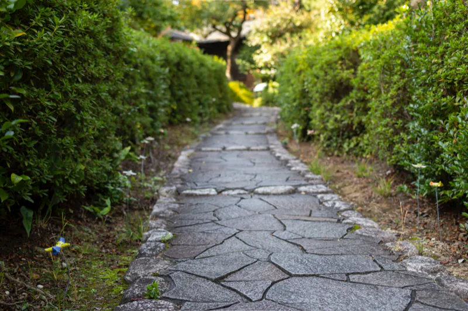

Art Obulist 2025 ワタナベエイジ展「Morning Monsters / W Eiji」Eiji Watanabe “Morning Monsters / W Eiji”
明けのモンスター／ふたりえいじ。管理棟に神経科学者の展示、休憩棟に美術家の作品。秋の公園の道が二つを結んだ。
- 会期
- 2025年11月1日（土）–12月7日（日）
- 開館
- 木・金・土・日・祝 10:00–16:00。月火水休み（11/3、11/24、11/25 は開館）
- 会場
- 大倉公園 管理棟、休憩棟、中庭など（愛知県大府市桃山町）
- 料金
- 入場無料
- 主催
- アートオブリスト実行委員会、大府市
- 企画・制作
- 山本さつき＋アートオブリスト実行委員会
- 実行委員長
- 渡辺英司
- 協力
- 北岡明佳、ボン靖二
- テーマ
- 「知覚」と「認識」
アートオブリスト史上、最多の来場者を記録した。タイトル「Morning Monsters」は、英司の個展「Morning Star（明けの明星）」（2024）と英治の錯視作品「Morning Monster」（2020）の名を融合させたもの。会期は終了している。
アートオブリスト（大府芸術目録｜Art＋Obu＋List）は、大府市が展開するアートプロジェクトの総称。2025年は設立10周年。

会場構成Venue
大倉公園内の二つの建物を、公園の実空間が結ぶ。来場者は科学の側から歩き始め、公園を抜けて美術の側に着く。
- 管理棟＝渡辺英治。錯視の展示、質問箱コーナー、17冊の手書きノート、進化シミュレーター。奥の壁面に「進化ストリーム」の壁面図
- 茅葺門。暖簾とバナーが掛けられた
- 中央広場
- 奥の門。《蝶瞰図（エデンのトンネル）》の切り抜きが道を示す
- 休憩棟＝渡辺英司。作品24点。畳の部屋に《エデンの海》《星の名前》
- 中庭の小屋《変身もんどり庵》。出張喫茶 mamedoi、Tiny shop the W Eiji、パフォーマンスの会場
秋の大倉公園の中を管理棟から茅葺門、中央広場、奥の門を抜けて、休憩棟に向かう実空間の回路は、最上のオルタナティブスペースだった。



左：茅葺門に掛かる暖簾とバナー。右上：紅葉の園路、奥に茅葺門のバナー。右下：管理棟の窓の《岡崎げんき館錯視》。2025.11.22

園路と門、錯視の箱の写真提供：アートオブリスト実行委員会
二人の交差点Crossings
ビックリハウス
唯一の共作。英治の提案を英司が制作した、ボールが坂を登る小屋。視覚情報と平衡感覚のズレで、物理的に起こり得ない現象が起きているように感じる。英治は作っているところを見ていない。
トイレットペーパーの左右
左に英司の《トイレットティッシュ》、右に英治の《エビングハウス錯視》。一つのトイレットペーパーがティッシュペーパーの形につながる作品は言語の問題、芯の大きさが違って見える提示は知覚の問題。同じ材料で解釈が違う。山本さつきはこの並置を、「自分は何を見ているのか」と「自分は何を見せられているのか」の違いとして、本展の性格を象徴するものと位置づけた。
右がサイエンスで左はアートなんですね。同じ材料なんだけど。
エデンの海、錯視から解放された魚
英司の《エデンの海》を見た英治は「根本がどこか一致する場所があるのでは」と考え、会期中に新作の錯視を加えた。でっカー錯視では遠近感で車の大きさが変わるが、別のレイヤーにいる魚の大きさは一定に見える。
蝶瞰図（エデンのトンネル）
英治から英司へのオマージュ。英司の作品《蝶瞰図》の蝶によって、休憩棟と管理棟をつなぐ道を示した。
朝起きたらカラフルな世界
質問箱に寄せられた「どうしてこういった分野の勉強をしようと思ったのですか」への英治の回答が、英司が28歳の頃に「解った」と感じた体験と一致した。二人を結んだ言葉である。
朝目がさめるとカラフルですてきな世界がいきなりみえます。これってすごくふしぎなことなんです。




記録のページContents
- 英司の作品 24 点Works by Eiji Watanabe, Artist78
- 英治の展示 16 項目と質問箱Exhibits by Eiji Watanabe, Scientist16
- 対談「ふたりは策士」Artist Talk36
- 関連イベント 7 件Exhibition-related Events30
- 記録写真Photos
番号はカタログのページ（赤番号）。
記録写真Photos


{kind=link}
{kind=link}
{kind=link}
{kind=link}
{kind=link}
{kind=link}
{kind=link}
{kind=link}
写真はサムネイルをクリックすると拡大。記録写真の原本は 734 枚あり、ここでは 21 枚に絞った。